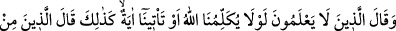
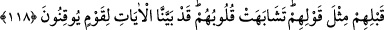

nedir?” denirse şöyle cevap veririz: “Öldükten sonra tekrar dirilmeyi” inkâr etmek,
Allah’dan “Kemâl” sıfatını nefyetmektir. “Allah’a evlâd isnâd etmek” ise Allah’a
noksanlık izâfe etmektir. Sövmek yalanlamaktan daha kötüdür. Allah’ı yalancılıkla
itham, Nebî (s.a.)’i yalancılıkla itham etmekten çok çok daha ağırdır. Bir hadis-i şerîfde
Hz. Peygamber: “Beni yalancılıkla suçlamak, bir başkasını yalancılıkla suçlamaya
benzemez.”[367] buyurmuştur. Yâni Allah’a yalan isnâd etmenin dışında, Nebî (s.a.)’e
yalan isnâd etmek, yalanların en büyüğüdür. Çünkü Hz. Peygamber’e yalan isnâd etmek,
İslâm’ın temellerinin yıkılmasına, şerîatın ve ahkâmının ifsâd olmasına yol açar. Bu
sebeble Hz. Peygamber: “Kim bilerek bana yalan isnâd ederse, cehennemden yerini
hazırlasın.”[368] buyurmuştur.
Mü’min’e yakışan, sapıklık, dalâlet, kötü söz ve fiillerden uzak durarak, şirk-i hafîden
kurtuluncaya kadar, gece-gündüz tevhîd üzre olmak ve zikrullaha devam etmektir.
Hadis-i şerifte: “Eğer krallar, zikrullahın değerini ve kıymetini bilseydi, emirliği
bırakırdı. Tüccar, zikrullahın değerini anlasa ticâretini bırakırdı. Eğer bir tesbîhin
sevâbı yeryüzü ehline taksim edilseydi, herkese dünyânın on katı sevâb düşerdi.”[369]
Bir başka hadiste de: “Mü’minin üç kalesi vardır: Zikrullah, Kur’ân tilâveti ve
mescid.” buyurulmuştur. Burada zikredilen mescidden murâd, kişinin namaz kıldığı
yerdir, ister evinde olsun, isterse dışarda. Fakat tevhîd izlerinin mülk ve melekût
âleminde zuhûr etmesi için ibâdet ve zikrullahda sıdk ve ihlâs şarttır. Allah’ım bizi
yakîne erdir ve bizlere temkin makamlarından bir makam ihsan et, âmin!
Mesnevî’de der ki:
Senin toprak ve sudan olan bedenle zikrinin buharından
Cennette bir kuş olur, o kuşun rûhu gönüldeki sıdk ve ihlâstır.
118. Bilmeyenler dediler ki: Allah bizimle konuşmalı ya da bize bir âyet (mûcize)
gelmeli değil miydi? Onlardan öncekiler de işte tıpkı onların dediklerini demişlerdi.
Kalbleri (akılları) nasıl da birbirine benzedi? Gerçekleri iyice bilmek isteyenlere
âyetleri apaçık gösterdik.
“Bilmeyenler”den maksad hakîkaten câhil olan Arap müşrikleri veya câhillik eden;
yâni bildikleriyle amel etmeyen ehl-i kitaptır. İlim amel içindir. Amelsiz ilim yok
hükmünde olduğundan bunlara da “bilmeyenler” denilmiştir.
“Allah bizimle konuşmalı ya da bize bir âyet gelmeli değil miydi?” Yâni Allah bize
vâsıtasız, açıkça meleklerle konuştuğu gibi, senin Allah Rasûlü olduğunu söylemeli
veya bir melek vâsıtasıyla bize senin, kendisinin peygamber ve elçisi olduğunu
söylemeli değil miydi? Diğer peygamberlere konuştuğu gibi, bizimle de konuşsaydı
ya?” dediler. Câhillerin bu sözleri kibir ve böbürlenmekten başka bir şey değildir. Bu